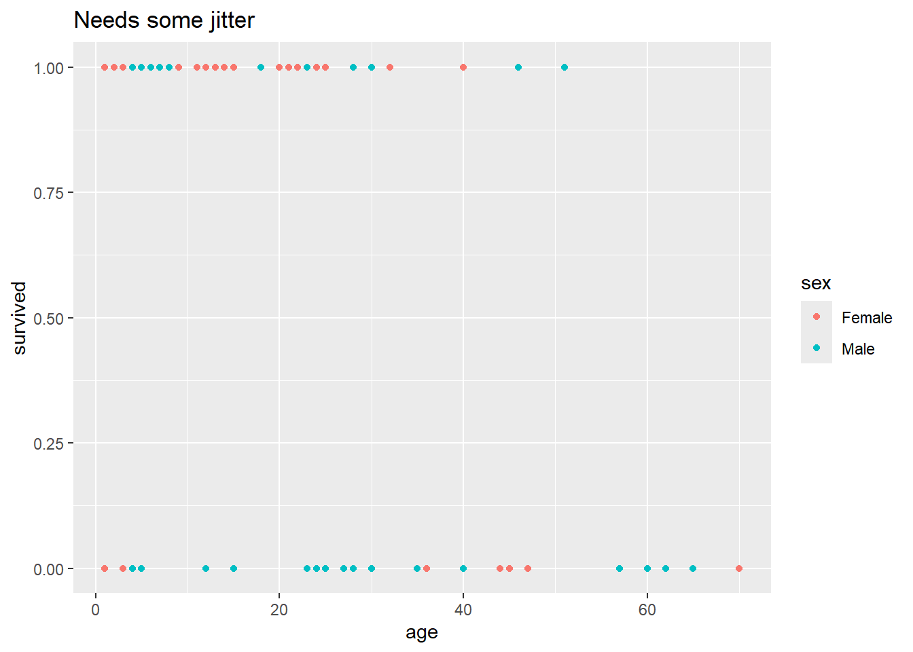
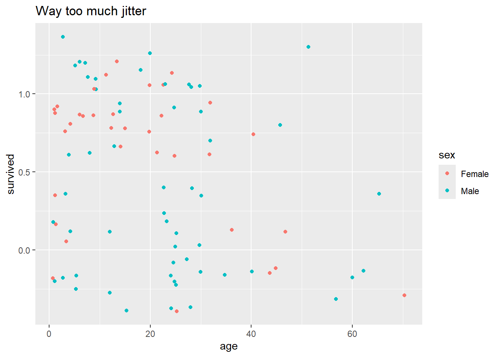
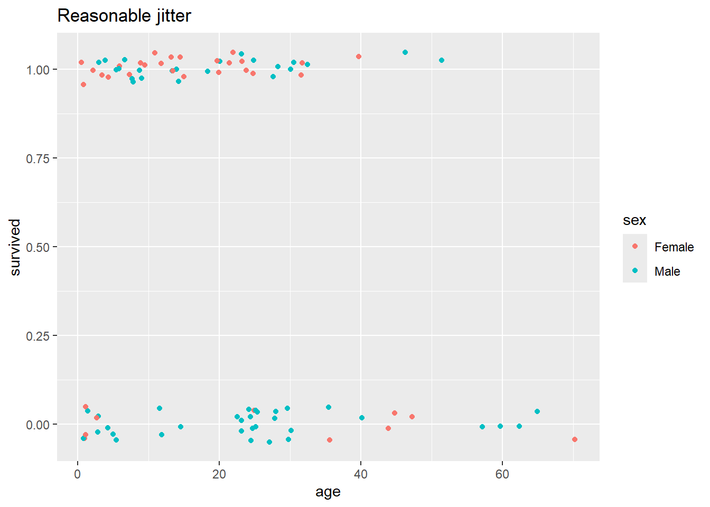
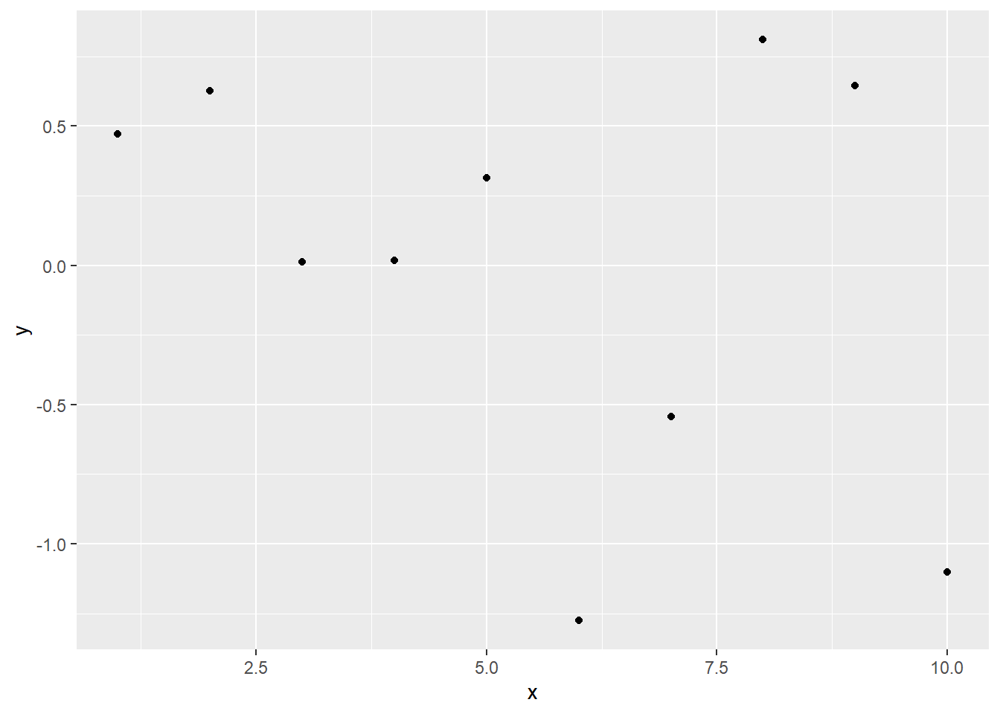

image(volcano)
Learn R 0
This bonus zeroth lab is a chance to familiarize yourself with the new lab format and some of the nifty new RStudio, RMarkdown, and R tools you’ll be using this quarter. WARNING: there is quite a bit of material covered in this lab, and so you may want to look through it section by section. Be sure to install required packages (see section below) as early in the week as you can, so that we can assist with any problems.
This futuristic document is an R Markdown Notebook. It integrates text, code, and output in an interactive, flexible, human-and-machine-readable form.
All labs for this course are written in the R notebook format.
The core of the R notebook is an Rmd (R Markdown) script – the part you see in the source (code) pane in RStudio. For each lab after this one, you will submit an R Markdown document to get credit for completing the lab. The present lab is not graded, but you are strongly encouraged to complete it, so that you can get the most out of the later labs.
You can view the R notebook as a fully-interactive R script, as a standalone text document, or as a “splitscreen” combination within RStudio. We suggest the latter option if your screen is large enough to do so comfortably. In the splitscreen view, you can readily switch between the easy-to-read HTML document and the corresponding interactive script. The next section describes HTML viewing options.
Within RStudio, generate an HTML preview from the Rmd script by clicking the “Preview” icon, located at the top of source (code) pane. If you don’t see a “Preview” icon, you may need to update RStudio. Check your RStudio version with “Help” -> “About RStudio.” The current version is 2023.03.0.
By default, the preview will appear in RStudio Viewer pane (usually found in the lower right-hand section of the RStudio window), so that you can see the two versions (Rmd and HTML) side by side. If the preview doesn’t appear (or pops out in its own window), check the preview settings, in the dropdown menu from the gear icon next to the Preview icon. If you want, you can customize the arrangement of the four RStudio panes through “Tools” -> “Global Options” -> “Pane Layout”.
The HTML preview will contain text and code, along with the output of any code chunks that were run before the preview was created. You can refresh the preview at any time without affecting the script. If the preview doesn’t appear after you click the “Preview” icon, please click it once more.
If you prefer to view complete code output (including graphs) in your HTML view, select “Knit to HTML” from the “Preview” dropdown menu.
A “fold” is a subset of the R Markdown (Rmd) file that you can collapse and expand. This is not necessary to do, but it can be useful if you’re working on just one portion of your document. For example, place your cursor HERE in the R Markdown file, and use the collapse fold command (Alt+L) and see what happens. You can expand the fold again using the expand fold command (Shift+Alt+L). You can also collapse and expand folds by clicking on the small triangles (downward pointing when the fold is expanded; pointing right when the fold is collapsed) in the left hand margin of the R Markdown file, just to the right of the line numbers.
There is also a keyboard shortcut to “collapse all folds.” For a “cleaner” viewing experience, you may wish to collapse all folds at the beginning of each lab, and expand individual sections as you work through them. Note that collapsing or expanding only applies to the R Markdown and does not affect the HTML preview (even if you generate it again after collapsing or expanding).
Occasionally, expanding and collapsing too much too fast can lead to persistent screen artifacts that interfere with the usability of the notebook. If this happens, you can select “Clear All Output” from the gear icon at the top of the source pane, and proceed.
“Chunks” in the R Markdown file are delimited by three backticks: ```. For example, below is a chunk of R code.
Execute the code chunk by placing your cursor inside the chunk (i.e., in the light gray area) and pressing Ctrl+Shift+Enter, or by clicking the green arrow in the upper right corner of the chunk.
image(volcano)
In general, you should run each successive code chunk as you encounter it.
If you prefer, you can produce all the lab output in advance using “Run All Chunks” (from the “Run” menu at the top of the source pane), but we recommend trying the interactive experience.
When you execute a code chunk in an R Notebook, the result appears inline directly beneath chunk. If you did not see a plot appear beneath the chunk when you execute it, you may need to update RStudio. Assuming the output appeared, it can be hidden again by clicking on the “x” in upper right hand corner of the output area.
If you would like to see code output in the HTML preview, after executing the chunk, click Preview again to refresh the HTML. Over in the HTML preview, you’ll see the volcano image, and you’ll see the R code that created that image. You have the option in the HTML preview to hide the code by clicking the “Hide” button above the code. You can specify that code from a particular chunk is not to be included in the HTML by heading the chunk with {r, echo=F}, instead of just {r}. Go ahead and try this if you want, remembering that you have to execute the chunk and then refresh the Preview.
The {r} (or {R}) after the backticks in the first line of the chunk is essential – it specifies that this chunk of the R Markdown file should be interpreted as R code. R Markdown documents can also contain chunks of code written in some other languages (like {python} and {sql}). However, in this class, we will only use R code. Contents of chunks without an {r} will not be evaluated as R code. For example:
# Here is some code that opens a new tab in RStudio,
# which could disrupt the flow of the lab if it were executed by default.
# You can make the chunk executable by putting an {r} after the first ``` that delimits the chunk.
View(mtcars)Notice that without the {r} after the opening backticks, you don’t even have the option of executing the code. Similarly, code written outside a code chunk will not be interpreted. For example, the following line is valid R code:
y <- c(1,2)
yet it will not be executed in this script, because it is not enclosed in an R code chunk.
While chunk output will (typically) appear inline in the script (i.e., in the R Markdown file), the actions taken within a chunk propagate globally – once a chunk is executed, the variables assigned, functions defined, etc, are available in R’s global environment for the current project, and are therefore accessible from the console window.
Here’s an example. The following code chunk simulates rolling a fair 6-sided die 20 times, and shows different representations of the outcomes. Notice that several of the commands in the R chunk below are enclosed in parentheses (e.g., (die <- 1:6)). This is a nice feature in that it will not only assign the variable as directed by the code inside the parentheses, but it also then prints the value of that variable. Go ahead and execute the chunk and take a look at the inline output below it.
# Simulate 20 rolls of a fair 6-sided die
set.seed(1066)
k <- 6 # number of sides
n <- 20 # number of trials
# Possible outcomes for each trial
(sides <- 1:k)[1] 1 2 3 4 5 6# Vector of equal probabilities for each outcome
(p_vec <- rep(1/k, k)) [1] 0.1666667 0.1666667 0.1666667 0.1666667 0.1666667 0.1666667# Use the sample function to simulate n trials
(outcomes <- sample(sides, n, replace = TRUE, prob = p_vec)) [1] 3 6 5 3 3 1 5 4 6 6 3 6 1 2 2 2 1 1 5 3# Frequency of each outcome
(counts <- table(outcomes)) outcomes
1 2 3 4 5 6
4 3 5 1 3 4 Now type in barplot(counts) at the console. You should get a plot – but it will not appear inline beneath the chunk, since it was not called from within the chunk. Objects like counts that are defined in a script chunk can be accessed from the console, and when you access those objects from the console, they behave like any other objects in the global environment.
During every lab, you are encouraged to experiment in the console and/or source panes. You can modify existing chunks, at the minor risk of breaking the lab script and necessitating a reload. Preferably, you can create your own chunks anywhere within the document, by typing out the triple backticks and bracketed {r} as above. As a shortcut, you can Insert a new chunk by pressing Ctrl+Alt+I (or the equivalent on your system).
You can use the console to access objects defined in the chunks, but using the console to modify such objects is generally inadvisable – you don’t want the contents of an apparently-self-contained chunk of script to depend on unrecorded console activity. This is actually quite important to keep in mind throughout your work in this course.
Chunks should either be self-contained or depend only on chunks above them.
As a corollary to the statement above: if you ever wish to skip some material and resume the lab activity at further down, you can “Run All Chunks Above” (in the “Run” menu in the upper right corner of the source pane), to ensure that any objects defined in the skipped portion are available going forward.
If you want to the modify objects in a code chunk, edit the chunk itself (or a copy of it) so that the behavior of each chunk remains clear.
In the Rmd script, copy the previous chunk of R code here, modify it so that it simulates 50 flips of a fair coin, and execute it. For simplicity, regard an outcome of 1 as “heads” and an outcome of 2 as “tails”. (Hint: you only need to change 2 characters in the whole chunk to accomplish this).
Observe that running the modified chunk has changed the state of outcomes, counts, etc. If you scroll back up and re-run the original chunk, these will be changed back to their previous states.
For more information about using the RMarkdown format, see the Markdown Quick Reference, the RMarkdown Reference Guide, and/or the RMarkdown Cheatsheet – all available from within the RStudio Help menu.
There are several non-default R packages that you’ll need to use during the course. We will use the package easypackages to handle the installation of these other packages. During the installation of these packages, you may be prompted, in the console, about whether you want to continue installation. In the console answer y.
Don’t worry if you get warnings in the output about collisions or masking between packages. If you get installation errors, examine the error message. Likely it will be something about a package needing updating, in which case you should update the package, then try again. If any other questions arise or you have problems with these installations, please post a question on the Module 1 Q&A Discussion.
If you are using RStudio on JupyterHub, you can skip this installation step. The packages should already be installed for you.
l <- c('easypackages',
'vcdExtra',
'Sleuth3',
'lme4',
'arm',
'glm2',
'magrittr',
'tidyverse')
for (i in 1:length(l)) {
require(l[i], character.only = T)
}Loading required package: easypackagesWarning: package 'easypackages' was built under R version 4.3.3Loading required package: vcdExtraWarning: package 'vcdExtra' was built under R version 4.3.3Loading required package: vcdWarning: package 'vcd' was built under R version 4.3.3Loading required package: gridLoading required package: gnmWarning: package 'gnm' was built under R version 4.3.3Loading required package: Sleuth3Loading required package: lme4Loading required package: MatrixLoading required package: armWarning: package 'arm' was built under R version 4.3.3Loading required package: MASS
arm (Version 1.14-4, built: 2024-4-1)Working directory is C:/Users/cmeck/Desktop/D_Anal/Anal_II/Anal_II_Notes/Data_Analysis_II_NotesLoading required package: glm2
Attaching package: 'glm2'The following object is masked from 'package:MASS':
crabsLoading required package: magrittrLoading required package: tidyverseWarning: package 'ggplot2' was built under R version 4.3.3── Attaching core tidyverse packages ──────────────────────── tidyverse 2.0.0 ──
✔ dplyr 1.1.4 ✔ readr 2.1.5
✔ forcats 1.0.0 ✔ stringr 1.5.1
✔ ggplot2 3.5.0 ✔ tibble 3.2.1
✔ lubridate 1.9.3 ✔ tidyr 1.3.1
✔ purrr 1.0.2 ── Conflicts ────────────────────────────────────────── tidyverse_conflicts() ──
✖ tidyr::expand() masks Matrix::expand()
✖ tidyr::extract() masks magrittr::extract()
✖ dplyr::filter() masks stats::filter()
✖ dplyr::lag() masks stats::lag()
✖ tidyr::pack() masks Matrix::pack()
✖ dplyr::select() masks MASS::select()
✖ purrr::set_names() masks magrittr::set_names()
✖ dplyr::summarise() masks vcdExtra::summarise()
✖ tidyr::unpack() masks Matrix::unpack()
ℹ Use the conflicted package (<http://conflicted.r-lib.org/>) to force all conflicts to become errorsIn this final section of the zeroth lab, we’ll cover some of the functionality in the new packages you just installed. The tools for manipulating and displaying categorical data are slightly more complicated than the tools you used in Data Analytics I for numerical data.
library(vcdExtra)
library(tidyverse) # includes ggplotqplot() to ggplot()In previous labs, you’ve seen the qplot() function, which is a simplified wrapper for ggplot(). In this class, we will sometimes need to draw on the full power of ggplot() for more customized visualizations.
To illustrate, we’ll bring in a data set you will see again in Lab 3 – the Donner Party data from the vcdExtra package.
head(Donner)| family | age | sex | survived | death | |
|---|---|---|---|---|---|
| Antoine | Other | 23 | Male | 0 | 1846-12-29 |
| Breen, Edward | Breen | 13 | Male | 1 | NA |
| Breen, Margaret I. | Breen | 1 | Female | 1 | NA |
| Breen, James | Breen | 5 | Male | 1 | NA |
| Breen, John | Breen | 14 | Male | 1 | NA |
| Breen, Mary | Breen | 40 | Female | 1 | NA |
We want a plot that shows whether individuals survived, as a function of their sex and age. With qplot(), we could do this as follows:
qplot(data = Donner, x = age, y = survived, color = sex, geom = "point", main = "Needs some jitter") Warning: `qplot()` was deprecated in ggplot2 3.4.0.
But there’s a subtle problem with this plot. There are 90 observations in this data set,
nrow(Donner) [1] 90but it looks like there are a lot fewer than 90 points on that plot. There must be some overplotting happening – that is, there must be some combinations of age and survived that contain contain multiple individuals, and those individuals are not being distinguished in the plot.
Here’s a table that shows the number of individuals at each unique combination of age and survived.
xtabs(data = Donner, ~ survived + age) # you will learn how to use xtabs() in Lab 1; don't worry about it now age
survived 1 2 3 4 5 6 7 8 9 11 12 13 14 15 18 20 21 22 23 24 25 27 28 30 32 35
0 5 0 3 1 2 0 0 0 0 0 2 0 0 1 0 0 0 0 3 2 6 1 2 3 0 1
1 2 1 2 2 1 2 2 2 4 1 1 3 3 1 1 3 1 1 2 1 2 0 2 2 3 0
age
survived 36 40 44 45 46 47 51 57 60 62 65 70
0 1 1 1 1 0 1 0 1 1 1 1 1
1 0 1 0 0 1 0 1 0 0 0 0 0This table shows the number of individuals who must be represented by each unique point on the current plot. Whenever a number is >1, there’s overplotting happening.
With qplot(), we can jitter the points with geom = "jitter" to help with this overplotting:
qplot(data = Donner, x = age, y = survived, color = sex, geom = "jitter", main = "Way too much jitter")
But this plot looks terrible – we need finer control over the degree of jitter. To achieve this, we’ll have to step up from qplot() to full ggplot(), where we’ll specify the jittering parameters in a separate geom, outside the main plot call.
ggplot(data = Donner, mapping = aes(x = age, y = survived, color = sex)) +
geom_jitter(height = 0.05, width = 0.5) + # see ?geom_jitter for details
ggtitle("Reasonable jitter")
The pseudocode blocks below compare the structure of a basic qplot() call and basic ggplot() call:
qplot(
data = <yourdata>,
<plot attribute> = <variable>
<another plot attribute> = <another variable>,
geom = "<typeofplot>"
)ggplot(
data = <yourdata>,
mapping = aes(
<plot attribute> = <variable>,
<another plot attribute> = <another variable>
)
) + geom_<typeofplot>(
<special plotting arguments>
)For quick reference, see the cheatsheet, accessible in RStudio via “Help” -> “Cheatsheets” -> “Data Visualization with ggplot2. For more in-depth coverage, see R for Data Science, Chapter 3.
dplyr and tidyr are tidyverse packages containing utilities for manipulating data frames – these are the “spreadsheet” functions, which let you do in R what you might otherwise be inclined to do in Excel. Here’s brief summary of the 7 key data-manipulation functions, all of which take a data frame as input and produce a data frame as output.
The first two functions are from the tidyr package, which helps you get your data frame into what’s known as the “tidy format”:
Tidy data has one column for each variable and one row for each observation
These functions help fix the two most obvious ways that a data set can be untidy. Some of this may seem rather abstract at this point, but you will see concrete examples as the course progresses.
pivot_longer() collects a variable whose values occupy multiple columns into one column. Thus, it makes “wide” data frames “taller” by stacking them up into more rows.
pivot_wider() is the reverse of pivot_longer(). It collects observations whose values occupy multiple rows. Thus, it makes “tall” data frames “wider” by spreading them out over more columns.
The next five functions are from the dplyr package.
mutate() creates new columns as a function of existing columns.
summarize() calculates group-level summaries for some column, within groups defined by another column.
select() subsets columns by name (as opposed to subsetting by column number with brackets with [, x])
filter() subsets the rows by a logical condition about the columns (as opposed to subsetting by row number with [x, ])
arrange() reorders rows – for instance, sort the whole data frame by order of the values from a chosen column
For quick reference on these functions, see the cheatsheet accessible in RStudio via “Help” -> Cheatsheets” -> “Data transformation with dplyr” and Data tidying with tidyr. For more in-depth coverage, see R for Data Science, Chapter 5.
If you have not used
dplyrbefore, you are encouraged read Chapter 5 of R for Data Science and practice some of the exercises therein to familiarize yourself with these utilities.
No discussion of using RStudio like a spreadsheet would be complete with mentioning View(). Using this on any data frame will bring up a new tab with a simple spreadsheet-like interface (not editable, but with built-in sorting and filtering capabilities).
Note: View() can only display the first 100 columns of a data frame, and does not explicitly warn you of this limitation. If you want to View() a data frame with more than 100 columns, you’ll need to choose which set of 100 or fewer to View() at one time.
All of the data-manipulation functions described are designed to work best with the pipe operator %>%, described in next section (optional, though a useful reference going forward). The pipe provides a particularly convenient syntax for chaining together a sequence of data-manipulation steps.
Perhaps the shortest useful description of the pipe is that, given functions f and g and an object x, it lets you express this:
g(f(x))like this:
x %>% f %>% gThis is more useful than it looks, as described in the next (optional) section.
If you prefer to skip that last section, you’re done and you can move on to Lab 1. There is nothing you need to submit for Lab 0, although you may wish to return to it later if you need to remind yourself how to use some features of the R notebook system. There will be a short graded assignment attached to the end of each subsequent lab, starting with Lab 1.
Remember post to the discussion board if you were unable to install required packages. Do try updating R and RStudio first, though.
Programs should be written for people to read, and only incidentally for machines to execute - SICP.
When we use the output of one function as the input of another function, we call that composing one function with the other – read f(g(x)) as “f composed with g applied to x”. In later labs we will make extensive use of the generalized linear model, which extends the regular linear model by composing a nonlinear function with the usual linear function of the predictors. Deep neural networks implement extremely complex classification rules that ultimately consist of thousands of simpler functions composed together. Function composition is a powerful concept – it’s what allows us to build up bigger and better functions out of simple, re-usable components. In this section we’ll introduce a convenient idiom for expressing function composition in R.
Let’s start with a simple example of ordinary function composition. We’ll compose the log() function with the factorial() function:
log(factorial(5))[1] 4.787492You can think of this as taking the output of the factorial function and feeding it in as the input to the log function. You can also think of it as effectively applying a whole new “log-factorial” function,
log.factorial <- function(x)log(factorial(x))
log.factorial(5)[1] 4.787492Same difference.
This is also an example of function composition:
exp(2 * (7 + 1))[1] 8886111But what are the functions? We could write it out in a less familiar but more “standard” way like so:
exp(multiply_by(2, add(7, 1))) # you can see that `+` and `*` operators are really just functions with a weird syntax. ?extract shows a full list of available 'functional aliases' for common operators (like the subsetting brackets, []).[1] 8886111Evidently we’re composing all the time, without even thinking about it. Unfortunately, it’s not always so easy. The more operations we want to compose, the more nesting parentheses we’ll need, and less readable our nested expression becomes. As a rather silly example, imagine if we didn’t have the + syntax for addition, and adding up the numbers 1:5 looked like this:
add(5, add(4, add(3, add(2, 1)))) # We need to go deeper![1] 15Alternatively, we could avoid that by reassigning each intermediate step to a placeholder, which might look like this:
u <- 1
u <- add(u, 2)
u <- add(u, 3)
u <- add(u, 4)
u <- add(u, 5)
u[1] 15While both of those approaches have their places, sometimes we’d like something else.
The
%>%operator pipes the output of any function into the input of another.
We can replace repeated + with piped add() like so:
1 %>% add(2) %>% add(3) %>% add(4) %>% add(5)[1] 15add() takes two inputs and produces one output. Each pipe sends output of evaluating the thing to the left into the first open argument position of the function to the right. The numbers in parentheses supply the second arguments to each add function.
Of course, we could have done that all with +, or even more easily with sum(). Here’s an example with a sequence of different functions, where such an approach isn’t available.
# Illustration of the same computation using progressively more pipe/less parentheses:
x <- 7
exp(((x + 1)/2)^2)[1] 8886111(((x + 1)/2)^2) %>% exp()[1] 8886111((x + 1)/2) %>% raise_to_power(2) %>% exp()[1] 8886111(x + 1) %>% divide_by(2) %>% raise_to_power(2) %>% exp()[1] 8886111x %>% add(1) %>% divide_by(2) %>% raise_to_power(2) %>% exp()[1] 8886111As mentioned above, by default, the output from the left is piped into the first open argument position of the function on the right. What if you wanted to pipe an output into a different argument of the right-hand function? You could try to pipe a data frame
df <- data.frame(x = 1:10, y = rnorm(10))into qplot(), but it will fail:
# Running this will produce an error
df %>% qplot(x, y)This fails because qplot() doesn’t understand that we’re trying to send df into the data argument of qplot(). We can fix that by specifying the correct argument explicitly with the . placeholder:
df %>% qplot(x, y, data = .)
Of course, in this example, df already had a name, so we could have used that directly in the data argument. In the context of a data-processing pipeline, df could have been the unnamed output of a chain of previous piped operations, and the . would be a convenient handle.
This concludes Lab Zero. Don’t forget to work through Lab 1 as well this week.